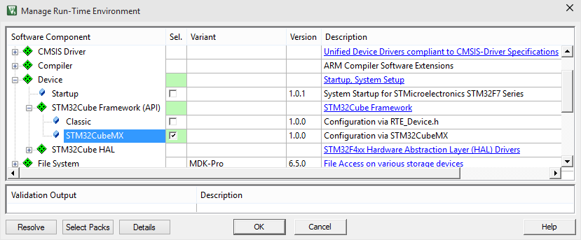
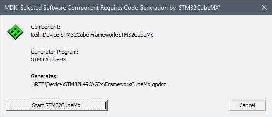
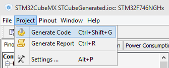
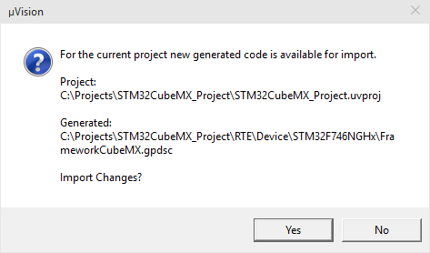
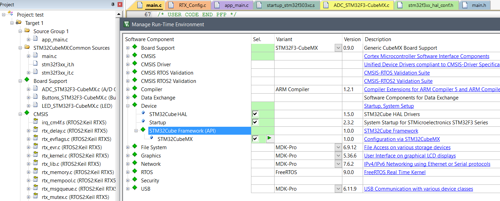

This section explains the overall overall process of using STM32CubeMX together with MDK.
Step 1: Create MDK project and select a STM32 device
Step 2: Add component Device:STM32Cube Framework (API):STM32CubeMX
- Open the Manage Run-Time Environment window and Select Device:STM32Cube Framework (API):STM32CubeMX

- Click OK to close the Manage Run-Time Environment window.
Step 3: Start STM32CubeMX and configure the STM32Cube Framework
- Click Start STM32CubeMX to launch STM32CubeMX.

Step 4: Use STM32CubeMX to configure microcontroller peripherals and generate setup code
- STM32CubeMX starts using the microcontroller selected in MDK. In STM32CubeMX, you may:
- When configuration is complete use in STM32CubeMX the menu command Project - Generate Code.
- Dismiss the message box that pops up and do not open the project or folder as suggested.

Step 5: Close STM32CubeMX and return to MDK
- In STM32CubeMX use the menu command File - Exit to close the utility. Then return to µVision.
- Click Yes to import the configuration settings in MDK.

- In MDK you may be prompted to accept changes. Click Yes to import the modifications of the configuration.
Step 6: Review Project Files in MDK
- STM32CubeMX adds several source files in the group STM32CubeMX:Common Sources:
- main.c contains initialization code for the STM32Cube HAL.
- stm32fxxx_it.c and stm32fxxx_it.h contains the interrupt handler implementation.

- Note
- When using CMSIS-RTOS RTX and CMSIS-Driver the STM32CubeMX generated files need modifications. Refer to Adapt Generated Files for details.
- When complete, use Project - Build Target to generate the application code.
Modify Configuration with STM32CubeMX
The setup of STM32CubeMX is stored in the project folder .\RTE\Device\device\STCubeGenerated. You may change any time the project configuration using STM32CubeMX with the previous setup.
- Open the Manage Run-Time Environment window.
- Click the green Play button on the component Device:STM32Cube Framework (API). This starts STM32CubeMX with the project specific setup.
- Repeat then Step 4 to Step 6 to modify the device configuration.
- Note
- STM32CubeMX re-generates the files in the group STM32CubeMX:Common Sources. STM32CubeMX merges code changes that are in the source code between the comments USER CODE BEGIN / USER CODE END. However other modifications to generated source files are discarded. It is therefore important to restore the modifications described under Adapt Generated Files.